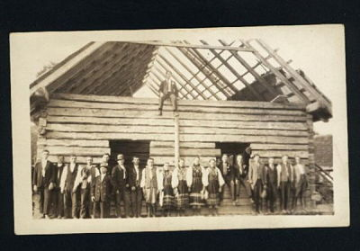

Surnames from the CarpathoRusyn villages
of Swiatkowa Wielka, Dudynce and Hrabovcik. Here you will find genealogy resources for searching your own family history particularly if your roots are from the Austrian crownland of Galicia (now southeastern Poland and northeastern Slovakia). Rusyn surnames from 1787 Austrian Cadastres, village census, Greek Catholic Church records and Ellis Island manifests are included. My USA descendants settled in New Jersey (Perth Amboy) Pennsylvania (Shamokin, Wilkes Barre, Hazleton and Plymouth) Massachusetts (Salem) and Michigan (Detroit). The pages include early family photographs, the 1933 travel journal of a family visit to Swiatkowa W., and an analysis of family living in Dudynce (1831-1871). Email addresses of other people doing genealogical research on surnames of these villages are posted so we can help each other discover our Carpatho Rusyn heritage.
Some of these surnames are:
- Chomik/Homik
- Gracon/Graczon
- Dran
- Jacubowski

Barn Raising in village of
Swiatkowa Wielka, Galicia - Juszczyk
- Kaczmar
- Kocan
- Kolanski
- Kolodiej
- Kotlar
- Maczuzak
- Mediuch
- Nestor/Nester
- Pastuszak
- Sirak
- Siry
- Slota
- Uram
- Warcholyk
- Wdowiak
- Wladyka
- Yankowicz
Perhaps, during your visit, you will find something interesting and useful to your own genealogy research. Enjoy!
-- Gloria Dran --
If your ancestors are from these villages and you would like to add their surnames or to comment about them on my Web Page, please contact me at carpatho_mts@hotmail.com